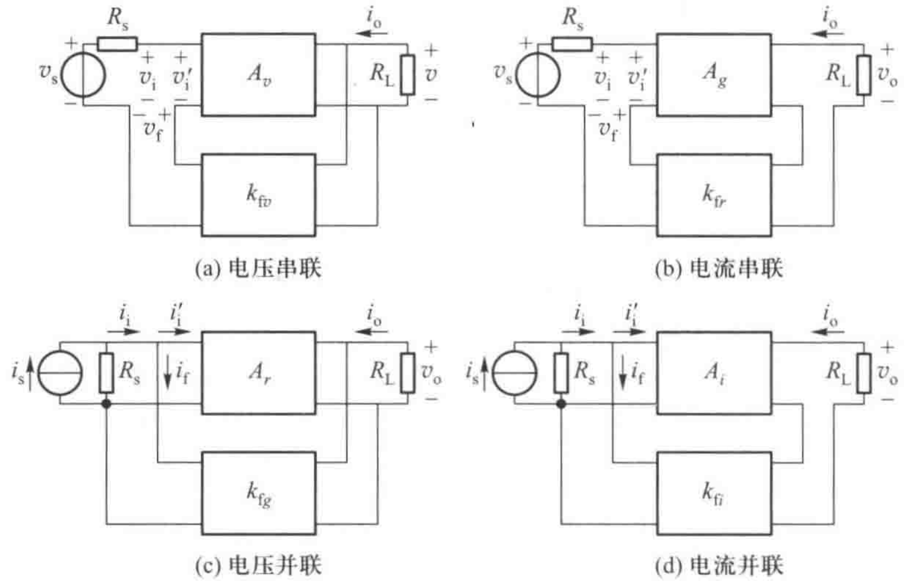
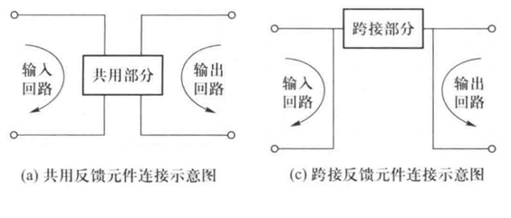
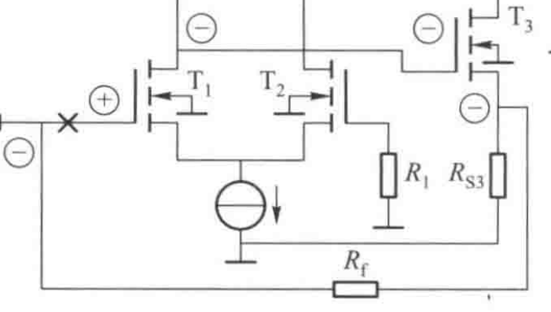
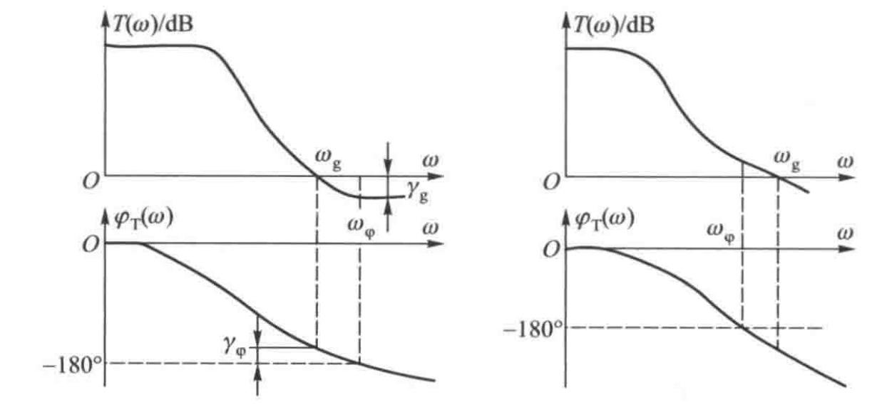
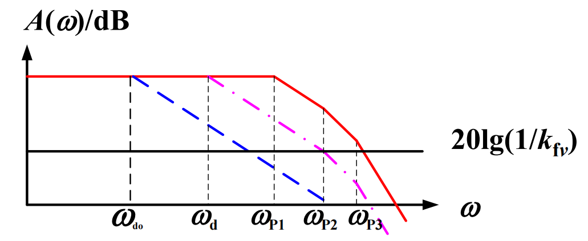
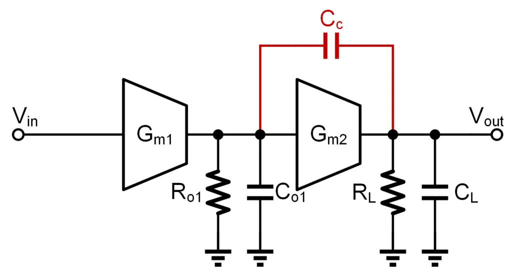

第五章 放大器的负反馈
- 反馈: 输出信号回送至输入端, 记作 xf.
- 闭环增益: Af=xi′+xfAxi′=1+TA=FA.
- kf=xoxf: 反馈系数.
- T=xi′xf=kfA: 环路增益.
- F=1+T: 反馈深度.
- xi′<xi: 负反馈; xi′>xI: 正反馈.
- 反馈类型:
- 输出端: 电压反馈与电流反馈.
- 电压: 直接取输出电压或分压.
- 电流: 不是电压反馈.
- 输入端: 串联反馈与并联反馈.
- 两两组合, 共4种.

- 增益计算:
- 电压串联: Av=vi′vo. 对应 kfv.
- 电压并联: Ar=ii′vo. 对应 kfg.
- 电流串联: Ag=vi′io. 对应 kfr.
- 电流并联: Ai=ii′io. 对应 kfi.
- 根据反馈系数 kf 的定义, 计算方法与增益部分相反.
- 反馈元件类型: 共用型, 跨接型.

负反馈性能影响
- 输入电阻
- 串联反馈: Rif=FRi, 电阻升高.
- 并联反馈: Rif=FRi, 电阻降低.
- 输出电阻
- 电压反馈: Rof=1+kvAvstRo, 电阻降低.
- Avst: 开路下的源电压增益.
- 记 Fst=1+kvAvst.
- 电流反馈: Rof=Ro(1+kiAisn), 电阻升高.
- Aisn: 短路下的源电流增益.
- 记 Fsn=1+kiAisn.
- 增益稳定性: Af 对 A 变化的敏感度.
- 记为 SAAf=AfΔAf/AΔA=F1.
- 反馈深度越深, Af 越不敏感.
- 失真与噪声: 添加负反馈后, 增益下降, 带宽提高. 对于单极点型放大器:
- 极点 ωpf=ωHF, 极点频率提高.
- 增益 AFI=FAI, 增益降低.
负反馈放大器性能分析
- 步骤:
- 判断负反馈类型.
- 放大器类型判断: 若输出直接取 vo 或其分压, 则为电压反馈, 反之为电流反馈. 若输入直连电压输入则为并联反馈, 反之为电流反馈.

- 反馈极性判断: 将闭合环路某点断开, 加正信号, 判断信号返回时的极性.

- 分离基本放大器.
- 对电压/并联: 从输出端看, 短接 Rs; 从输入端看, 短接 RL.
- 对电流/串联: 从输出端看, 断接 Rs; 从输入端看, 断接 RL.
- 求基本放大器的输入输出电阻, 放大系数.
- 求反馈放大器的对应参数.
- 深度负反馈:
- T=kfA≫1,Af≈kf1.
- Afs≈Af=kf1. 源增益与增益相同.
- 对串联/电流: Ri/Ro→∞.
- 对并联/电压: Ri/Ro→0.
- 虚短路/虚开路: 在深度负反馈条件下:
- vi′=0.
- ii′=0.
负反馈放大器的稳定性
- 判断所用的变量: T(ω)=kfA(ω).
- 自激临界条件:
- ∣T∣=1: 寻找 T 的零点或 A 与 kf1 的交点.
- φ=±π.
- 相位裕量, 增益裕量: γφ,γg.

- 电容补偿: 添加电容, 减少上限频率. 电容跨接时, 称为密勒补偿.
- 补偿后拐点: ωd=R(C+Cφ)1.

- 粉线: 任意电容补偿.
- 蓝线: ωd0=AIωp2, 称为全补偿.
- 密勒补偿: 通过跨接密勒电容, 减少电容值.

下一章: 集成运放及应用电路